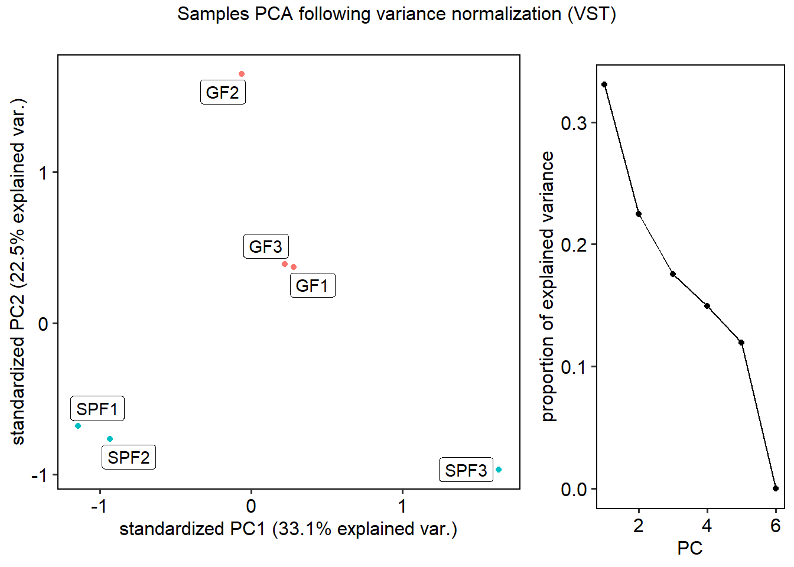
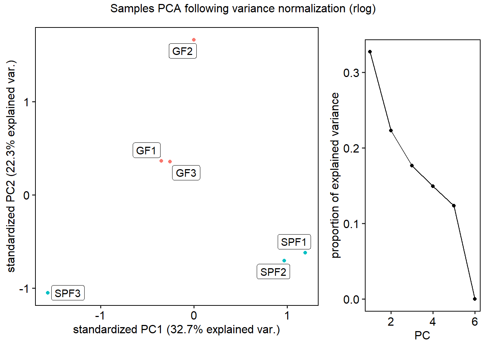
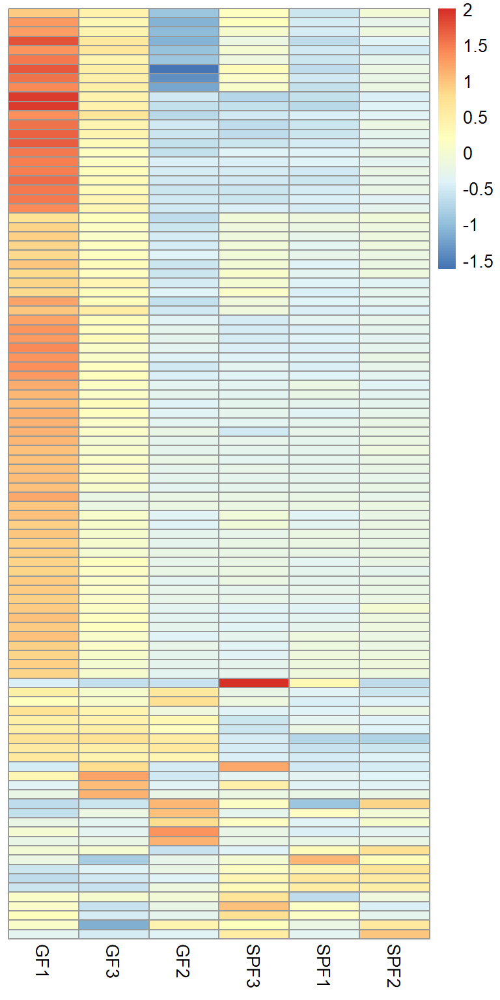
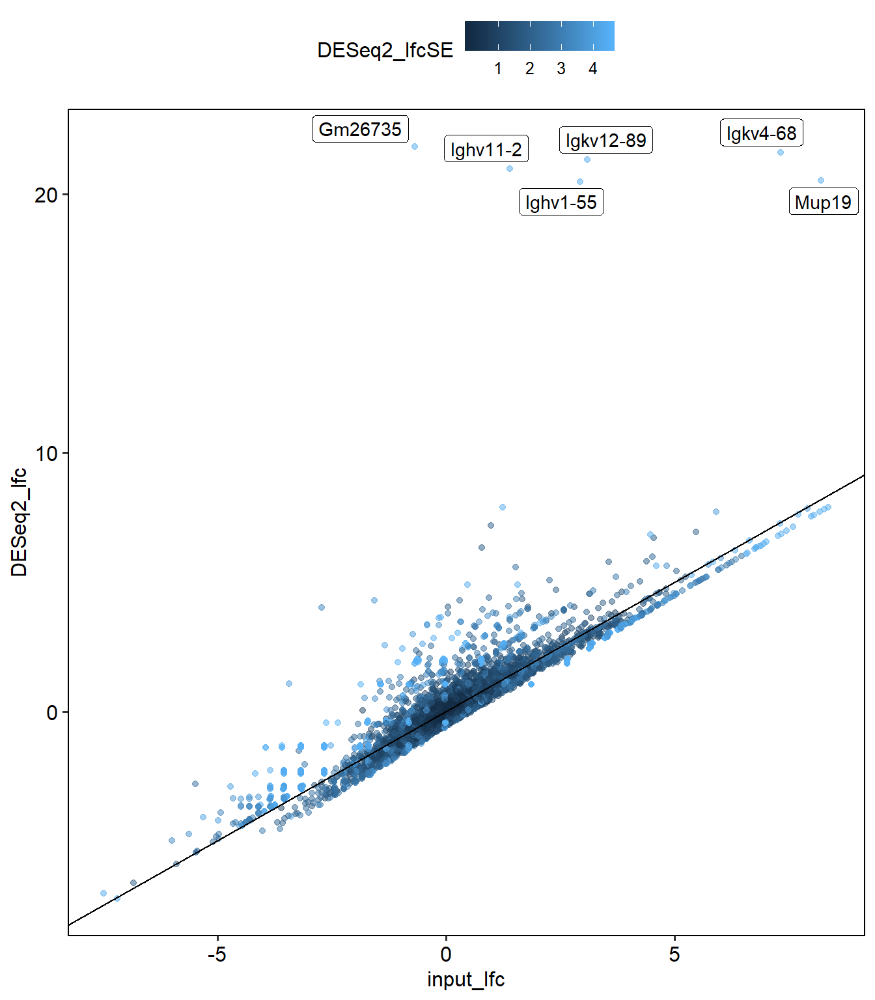
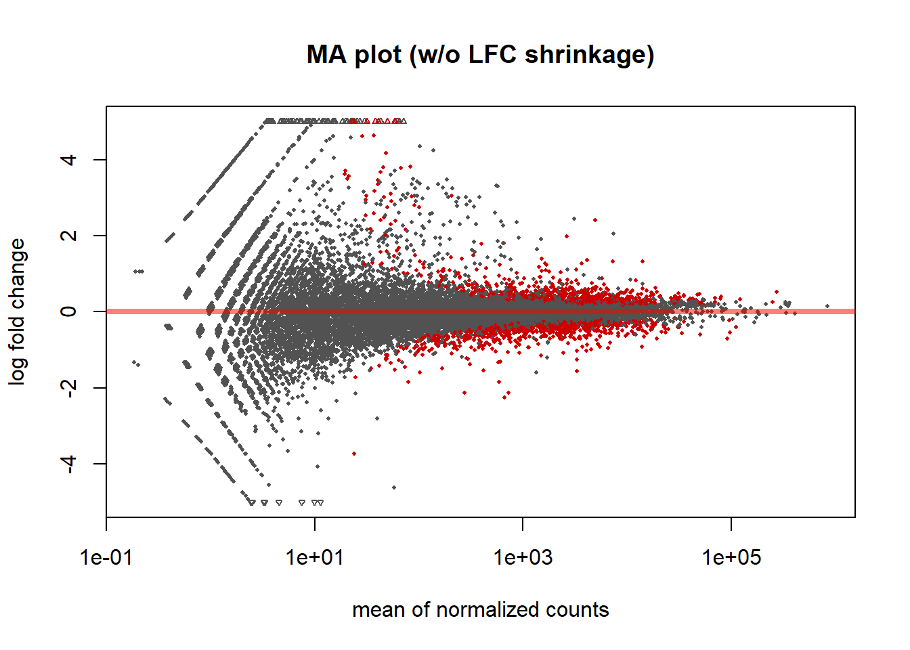
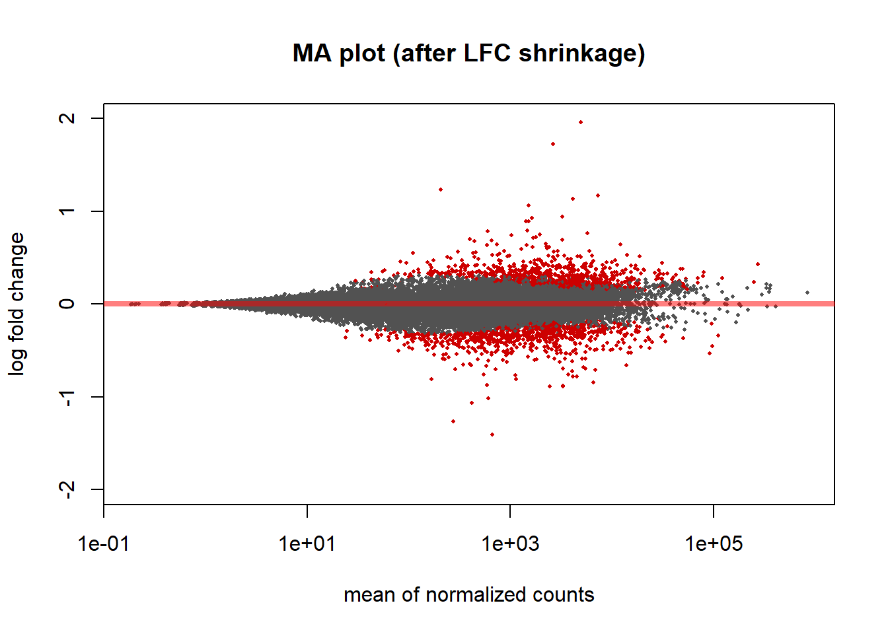
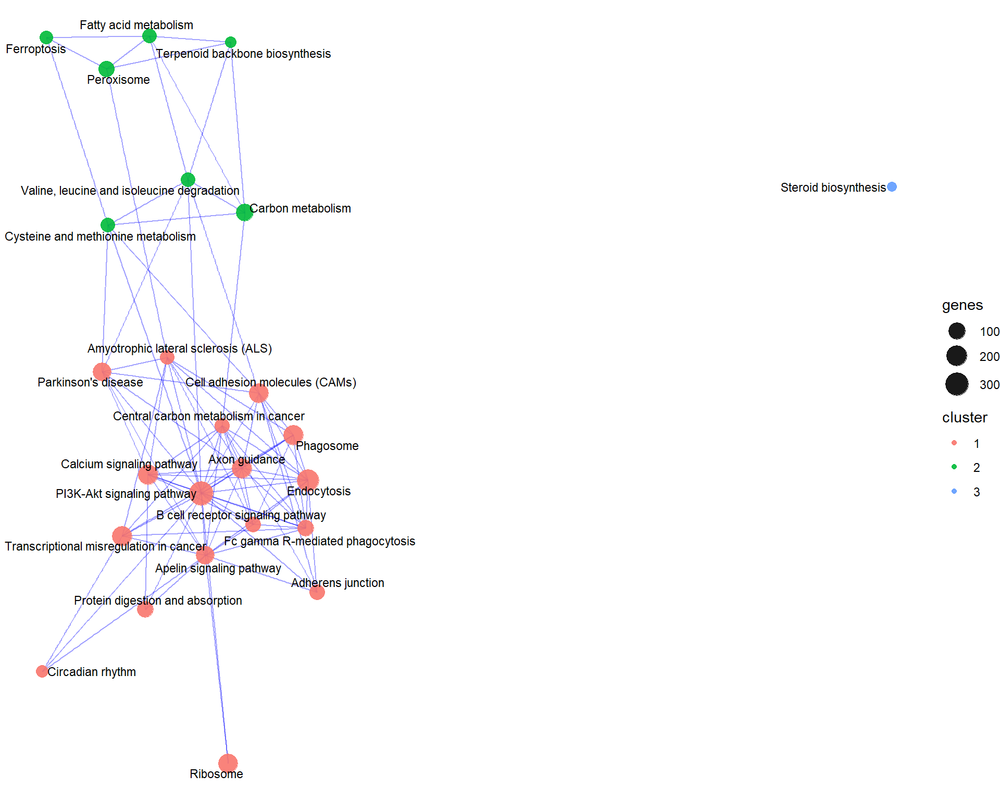
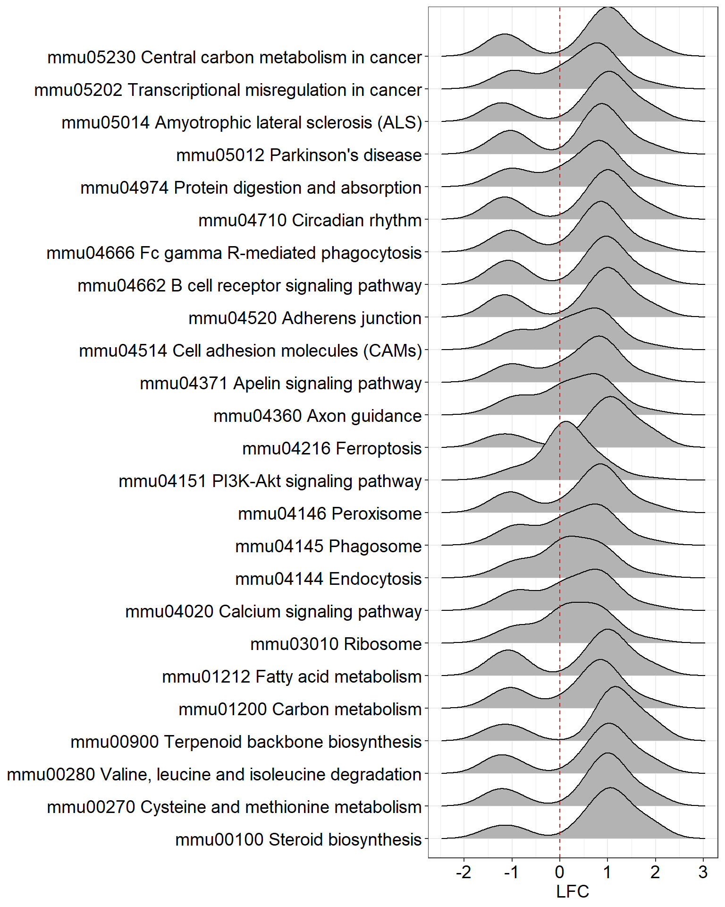

Last updated: 2019-01-24
workflowr checks: (Click a bullet for more information) ✔ R Markdown file: up-to-date
Great! Since the R Markdown file has been committed to the Git repository, you know the exact version of the code that produced these results.
✔ Environment: empty
Great job! The global environment was empty. Objects defined in the global environment can affect the analysis in your R Markdown file in unknown ways. For reproduciblity it’s best to always run the code in an empty environment.
✔ Seed:
set.seed(20190124)
The command set.seed(20190124) was run prior to running the code in the R Markdown file. Setting a seed ensures that any results that rely on randomness, e.g. subsampling or permutations, are reproducible.
✔ Session information: recorded
Great job! Recording the operating system, R version, and package versions is critical for reproducibility.
✔ Repository version: 56c1bc7
wflow_publish or wflow_git_commit). workflowr only checks the R Markdown file, but you know if there are other scripts or data files that it depends on. Below is the status of the Git repository when the results were generated:
Ignored files:
Ignored: .Rproj.user/
Ignored: analysis/de_and_gage_cache/
library(readxl)
library(stringr)
library(data.table)
library(DESeq2)
library(pheatmap)
library(RColorBrewer)
library(ggplot2)
library(ggbiplot)
library(ggrepel)
library(ggridges)
library(ggpubr)
library(gridExtra)
library(genefilter)
library(enrichplot)
library(ggraph)
library(igraph)
library(tidygraph)
library(pathview)
library(gage)
library(AnnotationDbi)
library(biomaRt)theme_set(theme_pubr(border=TRUE))input <- file.path("data","GF vs. SPF Gene Expression Analysis.xlsx")
data <- read_excel(input, sheet = 1)
setDT(data)
head(data) Name Chromosome Region Identifier
1: Per2 1 complement(91415982..91459324) ENSMUSG00000055866
2: Ciart 3 complement(95878503..95882251) ENSMUSG00000038550
3: Arntl 7 113207465..113314126 ENSMUSG00000055116
4: Dbp 7 45705088..45710203 ENSMUSG00000059824
5: Per1 11 69095217..69109960 ENSMUSG00000020893
6: Tef 15 81802421..81826861 ENSMUSG00000022389
GF vs. SPF Max group means GF vs. SPF Fold change
1: 7.007493 2.865407
2: 2.898961 8.373879
3: 6.307116 -4.358286
4: 50.122624 4.709842
5: 13.567661 3.770736
6: 24.818669 2.418834
GF vs. SPF Log fold change GF vs. SPF P-value
1: 1.518740 0
2: 3.065896 0
3: -2.123761 0
4: 2.235679 0
5: 1.914846 0
6: 1.274312 0
GF vs. SPF FDR p-value GF vs. SPF Bonferroni GF2 Total counts GF2 RPKM
1: 0 0 1707 6.130629
2: 0 0 269 2.502213
3: 0 0 308 1.756436
4: 0 0 6198 43.552937
5: 0 0 3817 14.256379
6: 0 0 8693 23.245749
GF2 TPM GF2 CPM GF3 Total counts GF3 RPKM GF3 TPM GF3 CPM
1: 17.070891 39.108243 1869 6.983796 18.255147 45.520768
2: 6.967476 6.162928 263 2.545297 6.653226 6.405544
3: 4.890841 7.056437 245 1.453645 3.799726 5.967142
4: 121.274251 141.999349 7138 52.185892 136.410225 173.850851
5: 39.697246 87.449421 3218 12.505003 32.687192 78.376581
6: 64.728374 199.161074 9491 26.405630 69.022446 231.159768
GF1 Total counts GF1 RPKM GF1 TPM GF1 CPM SPF1 Total counts
1: 2346 7.908053 21.027713 49.348972 884
2: 418 3.649374 9.703777 8.792784 37
3: 219 1.172184 3.116867 4.606745 1459
4: 8283 54.629041 145.260001 174.235948 1538
5: 3977 13.941603 37.071073 83.657656 1015
6: 9883 24.804627 65.956130 207.892536 4216
SPF1 RPKM SPF1 TPM SPF1 CPM SPF2 Total counts SPF2 RPKM SPF2 TPM
1: 2.8349033 8.1934776 18.1114540 712 2.4947027 7.254274
2: 0.3073182 0.8882153 0.7580586 43 0.3902184 1.134705
3: 7.4293606 21.4724428 29.8920944 1192 6.6317052 19.284144
4: 9.6502081 27.8911674 31.5106520 1341 9.1930989 26.732347
5: 3.3850694 9.7835752 20.7953912 963 3.5089779 10.203656
6: 10.0667419 29.0950394 86.3777039 3727 9.7230056 28.273248
SPF2 CPM SPF3 Total counts SPF3 RPKM SPF3 TPM SPF3 CPM
1: 15.9176630 457 1.9162173 4.6595849 12.6792086
2: 0.9613195 30 0.3257994 0.7922327 0.8323332
3: 26.6486717 730 4.8602831 11.8185458 20.2534405
4: 29.9797557 1538 12.6176721 30.6818620 42.6709472
5: 21.5290863 867 3.7806214 9.1931779 24.0544286
6: 83.3218116 3401 10.6178729 25.8190346 94.3588371Remove genes w/o counts (also tried removing genes with a few counts, e.g. 5, the results are not different from this).
count_cols <- grep("count",names(data),value=TRUE)
filtrows <- data[,rowSums(.SD),.SDcols=count_cols]==0
data <- data[!filtrows]Get raw counts in DESeqDataSet.
count_cols <- grep("count",names(data),value=TRUE)
count_data <- as.data.frame(data[,..count_cols])
rownames(count_data) <- data$Identifier
colnames(count_data) <- stringr::str_extract(count_cols,"(GF|SPF)\\d")
col_data <- data.frame(
strain=factor(c(rep("GF",3),rep("SPF",3)), levels=c("SPF","GF")),
sample=factor(colnames(count_data),levels=c("SPF1","SPF2","SPF3","GF1","GF2","GF3"))
)
dds <- DESeqDataSetFromMatrix(
countData = count_data,
colData = col_data,
design = ~ strain
)converting counts to integer modeddsclass: DESeqDataSet
dim: 23662 6
metadata(1): version
assays(1): counts
rownames(23662): ENSMUSG00000055866 ENSMUSG00000038550 ...
ENSMUSG00000069044 ENSMUSG00000068457
rowData names(0):
colnames(6): GF2 GF3 ... SPF2 SPF3
colData names(2): strain samplesampleDists <- dist(t(assay(dds)))
sampleDistMatrix <- as.matrix(sampleDists)
colors <- colorRampPalette(rev(brewer.pal(9,"Blues")))(255)
phs <- pheatmap(
sampleDistMatrix,
clustering_distance_rows = sampleDists,
clustering_distance_cols = sampleDists,
col=colors,
main = "Samples distance heatmap\n(based on raw counts)"
)
| Version | Author | Date |
|---|---|---|
| 56c1bc7 | Anamaria Elek | 2019-01-24 |
rds <- rlog(assay(dds))
pcards <- prcomp(t(rds), scale=TRUE)
df <- data.frame(t(rds))
df$col <- c(rep("GF",3),rep("SPF",3))
df$sample <- rownames(df)
pcas <- data.table(scale(pcards$x[,1:2]), keep.rownames="sample")
pcar <- ggbiplot::ggbiplot(pcards, groups=factor(df$col), var.axes=FALSE) +
geom_label_repel(data=pcas, mapping=aes(x=PC1, y=PC2, label=sample)) +
guides(colour=FALSE)
pcarscree <- ggbiplot::ggscreeplot(pcards) + labs(title="", x="PC")
grid.arrange(
pcar, pcarscree,
ncol=2, widths=2:1, top="Samples PCA following variance normalization (rlog)"
)
| Version | Author | Date |
|---|---|---|
| 56c1bc7 | Anamaria Elek | 2019-01-24 |
Clustering by genes with most variable counts after normalization.
First, mapping entrez ids to gene names.
require(biomaRt)
mart <- useDataset("mmusculus_gene_ensembl", useMart("ensembl"))
genes <- getBM(
attributes=c("ensembl_gene_id","external_gene_name","description"),
filters="ensembl_gene_id",
values=rownames(dds),
mart=mart
)setDT(genes)
genenames <- cbind.data.frame(ensembl_gene_id=rownames(dds))
setDT(genenames)[genes,on='ensembl_gene_id',external_gene_name:=i.description]Top 100 most variable genes on a heatmap.
require(genefilter)
heatmap_function <- function(rds,include=1:ncol(rds)) {
topVarGenes <- head(order(rowVars(rds[,include]), decreasing = TRUE), 100)
mat <- rds[topVarGenes,include]
mat <- mat - rowMeans(mat)
rownames(mat) <- stringr::str_extract(genenames$external_gene_name, "[^,\\[\\(]+")[topVarGenes]
phg <- pheatmap(mat,treeheight_col=0,treeheight_row=0,show_rownames=FALSE)
}
heatmap_function(rds)
| Version | Author | Date |
|---|---|---|
| 56c1bc7 | Anamaria Elek | 2019-01-24 |
#heatmap_function(rds,1:5)
#heatmap_function(rds,c(1,2,4,5))Without SPF3.
excols <- match(c("SPF3"),colnames(dds))
dds <- dds[,-excols]
dds <- DESeq(dds)estimating size factorsestimating dispersionsgene-wise dispersion estimatesmean-dispersion relationshipfinal dispersion estimatesfitting model and testingres <- results(dds)all.equal(data$Identifier, rownames(res)) # sanity check[1] TRUEcompadt <- data.table(
gene=data$Name,
input_lfc=data$`GF vs. SPF Log fold change`,
input_pval=data$`GF vs. SPF P-value`,
input_fdr=data$`GF vs. SPF FDR p-value`,
DESeq2_lfc=res$log2FoldChange,
DESeq2_lfcSE=res$lfcSE,
DESeq2_pval=res$pvalue,
DESeq2_padj=res$padj
)
outliers <- compadt[abs(input_lfc)>10 | abs(DESeq2_lfc)>10]
ggplot(compadt[!(is.na(input_lfc)|is.na(DESeq2_lfc)|is.na(DESeq2_lfcSE))], aes(input_lfc, DESeq2_lfc)) +
geom_point(aes(colour=DESeq2_lfcSE), alpha=0.5) +
geom_abline(slope=1,intercept=0) +
geom_label_repel(data=outliers, aes(label=gene))
| Version | Author | Date |
|---|---|---|
| 56c1bc7 | Anamaria Elek | 2019-01-24 |
data[Name %in% outliers$gene] Name Chromosome Region
1: Igkv4-68 6 complement(69304834..69305405)
2: Mup19 4 complement(61778324..61782269)
3: Igkv12-89 6 complement(68834846..68835307)
4: Ighv11-2 12 complement(114048241..114048812)
5: Ighv1-55 12 complement(115208095..115208591)
6: Gm26735 13 28943048..28951671
Identifier GF vs. SPF Max group means GF vs. SPF Fold change
1: ENSMUSG00000076549 4.3921878 159.545071
2: ENSMUSG00000078673 0.7247737 294.707579
3: ENSMUSG00000076534 4.2049267 8.532920
4: ENSMUSG00000096108 2.2941886 2.637506
5: ENSMUSG00000095589 1.9501966 7.658198
6: ENSMUSG00000097461 1.1648440 -1.612138
GF vs. SPF Log fold change GF vs. SPF P-value
1: 7.3178202 7.200266e-06
2: 8.2031404 1.668340e-03
3: 3.0930396 1.959523e-02
4: 1.3991745 3.062572e-01
5: 2.9370050 2.094011e-02
6: -0.6889749 6.521797e-01
GF vs. SPF FDR p-value GF vs. SPF Bonferroni GF2 Total counts GF2 RPKM
1: 0.003847021 0.373161 0 0.000000
2: 0.262010301 1.000000 110 2.174321
3: 0.999997418 1.000000 0 0.000000
4: 0.999997418 1.000000 0 0.000000
5: 0.999997418 1.000000 0 0.000000
6: 0.999997418 1.000000 0 0.000000
GF2 TPM GF2 CPM GF3 Total counts GF3 RPKM GF3 TPM GF3 CPM
1: 0.000000 0.000000 0 0.000000 0.000000 0.000000
2: 6.054451 2.520156 0 0.000000 0.000000 0.000000
3: 0.000000 0.000000 0 0.000000 0.000000 0.000000
4: 0.000000 0.000000 145 6.882566 17.990539 3.531574
5: 0.000000 0.000000 0 0.000000 0.000000 0.000000
6: 0.000000 0.000000 267 2.205528 5.765094 6.502967
GF1 Total counts GF1 RPKM GF1 TPM GF1 CPM SPF1 Total counts SPF1 RPKM
1: 263 13.17656 35.03682 5.532302 0 0
2: 0 0.00000 0.00000 0.000000 0 0
3: 216 12.61478 33.54302 4.543639 0 0
4: 0 0.00000 0.00000 0.000000 0 0
5: 123 5.85059 15.55687 2.587350 0 0
6: 0 0.00000 0.00000 0.000000 0 0
SPF1 TPM SPF1 CPM SPF2 Total counts SPF2 RPKM SPF2 TPM SPF2 CPM
1: 0 0 0 0 0 0
2: 0 0 0 0 0 0
3: 0 0 0 0 0 0
4: 0 0 0 0 0 0
5: 0 0 0 0 0 0
6: 0 0 0 0 0 0
SPF3 Total counts SPF3 RPKM SPF3 TPM SPF3 CPM
1: 1 0.06232085 0.151543 0.02774444
2: 0 0.00000000 0.000000 0.00000000
3: 19 1.38027785 3.356364 0.52714434
4: 48 2.55664207 6.216879 1.33173307
5: 12 0.71000722 1.726495 0.33293327
6: 377 3.49453191 8.497506 10.45965351plotMA(res, ylim = c(-5, 5), main="MA plot (w/o LFC shrinkage)")
| Version | Author | Date |
|---|---|---|
| 56c1bc7 | Anamaria Elek | 2019-01-24 |
After LFC shrinkage:
# resultsNames(dds) # see coeffs
res <- lfcShrink(dds, coef="strain_GF_vs_SPF", type = "normal")using 'normal' for LFC shrinkage, the Normal prior from Love et al (2014).
additional priors are available via the 'type' argument, see ?lfcShrink for detailsplotMA(res, ylim = c(-2, 2), main="MA plot (after LFC shrinkage)")
| Version | Author | Date |
|---|---|---|
| 56c1bc7 | Anamaria Elek | 2019-01-24 |
Using DESeq2 DEGs.
resdata <- as.data.table(res)
#sum(abs(resdata$log2FoldChange)>2&resdata$pvalue<0.01, na.rm=TRUE) # DE genes
exp_data <- res$log2FoldChange
names(exp_data) <- data$NameNeed to retrieve gene sets data from KEGG.
kegg.mm <- kegg.gsets(species="mmu")Next, map genes’ ENTREZ IDs to symbols.
kegg.mm.id <- lapply(kegg.mm$kg.sets, function(x) eg2id(x, category="SYMBOL", org="mouse")[,2])
all.equal(lapply(kegg.mm$kg.sets,length),lapply(kegg.mm.id,length)) # sanity check[1] TRUEkegg_gage <- gage(
exp_data,
gsets=kegg.mm.id,
same.dir=FALSE,
ref=NULL, samp=NULL
)It is recommanded to set same.dir=FALSE for KEGG pathways analysis so as to capture gene sets i.e. pathways perturbed towards both directions simultaneously. These are pathways that are more perturbed than expected (hence the label greater).
dim(kegg_gage$greater)[1] 314 6There are 314 of them.
Next, sort and count signficant gene sets:
kegg_sig <- sigGeneSet(kegg_gage)[1] "gs.data needs to be a matrix-like object!"
[1] "gs.data needs to be a matrix-like object!"
[1] "there are 140 signficantly two-direction perturbed gene sets"dim(kegg_sig$greater)[1] 140 6There are 140 of those.
Extract a non-redundant significant gene set list:
nrlist <- sapply(kegg_sig[1], function(x){
if (nrow(x)>1)
esset.grp(x, exp_data, kegg.mm.id, same.dir=FALSE)
else if (nrow(x)==1)
x
else NULL
}, simplify=FALSE, USE.NAMES=TRUE)
length(nrlist$greater$allSets) # signficant gene sets[1] 65length(nrlist$greater$essentialSets) # non-redundant signficant gene set[1] 25nrlist$greater$essentialSets [1] "mmu03010 Ribosome"
[2] "mmu04151 PI3K-Akt signaling pathway"
[3] "mmu05012 Parkinson's disease"
[4] "mmu04974 Protein digestion and absorption"
[5] "mmu04360 Axon guidance"
[6] "mmu04514 Cell adhesion molecules (CAMs)"
[7] "mmu04710 Circadian rhythm"
[8] "mmu00100 Steroid biosynthesis"
[9] "mmu04371 Apelin signaling pathway"
[10] "mmu04144 Endocytosis"
[11] "mmu04666 Fc gamma R-mediated phagocytosis"
[12] "mmu04145 Phagosome"
[13] "mmu01212 Fatty acid metabolism"
[14] "mmu05202 Transcriptional misregulation in cancer"
[15] "mmu05230 Central carbon metabolism in cancer"
[16] "mmu00900 Terpenoid backbone biosynthesis"
[17] "mmu04662 B cell receptor signaling pathway"
[18] "mmu04020 Calcium signaling pathway"
[19] "mmu00270 Cysteine and methionine metabolism"
[20] "mmu04216 Ferroptosis"
[21] "mmu00280 Valine, leucine and isoleucine degradation"
[22] "mmu05014 Amyotrophic lateral sclerosis (ALS)"
[23] "mmu04520 Adherens junction"
[24] "mmu04146 Peroxisome"
[25] "mmu01200 Carbon metabolism" overlaps <- nrlist$greater$overlapCounts
labels <- str_extract(nrlist$greater$allSets, "(?<=mmu\\d{5} ).*")
sizes <- sapply(kegg.mm$kg.sets[nrlist$greater$allSets],length)There are too many gene sets (65), graph will be too crowded. Using non-redundant sets instead.
idx <- nrlist$greater$allSets %in% nrlist$greater$essentialSets
overlaps <- overlaps[idx,idx]
labels <- labels[idx]
sizes <- sizes[idx]Now onto graphs.
set.seed(50)
#g <- graph_from_adjacency_matrix(overlaps)
g <- as_tbl_graph(overlaps) %>% mutate(genes=sizes) %>%
mutate(cluster = as.factor(group_infomap()))
ggraph(g, layout = "nicely") +
geom_edge_link(alpha=0.2,edge_colour="blue", show.legend=FALSE) +
geom_node_point(aes(size=genes,colour=cluster),alpha=0.9,show.legend=TRUE) +
geom_node_text(aes(label=labels), repel=TRUE, size=3) +
theme_void() +
scale_size(range=c(3,8))
| Version | Author | Date |
|---|---|---|
| 56c1bc7 | Anamaria Elek | 2019-01-24 |
The following code loops over the groups of resulting gene sets, creating a directory for each group in which the output files will be saved.
Since same.dir=FALSE there is just one group, labeled greater, otherwise there would be both greater and less, containing upregulated and downregulated gene sets, respectively.
The following set of operations is then executed for each non-redundant (i.e. essential) gene set:
* identify essential genes in the set * extract expression data (i.e. LFC values) for those genes * create output files (LFC and pathway maps)
require(pathview)
exprlist <- lapply(names(nrlist), function(x){
# make output dir
name <- x
x <- nrlist[[name]]
wdir <- getwd()
outdir <- file.path("output",name)
dir.create(outdir)
setwd(outdir)
# handle empty and matrix input
if (!is.null(x)) {
if (is.matrix(x)) {
gene_sets <- rownames(x)
x <- list(stats=x)
x$coreGeneSets[[gene_sets]] <- kegg.mm.id[[gene_sets]]
} else {
gene_sets <- x$essentialSets
}
exprout <- lapply(gene_sets, function(gs){
# gene set identifier
gsname <- stringr::str_extract(gs,"mmu\\d+")
# essential genes identifiers
gsgenes <- x$coreGeneSets[[gs]]
gsgenes <- gsgenes[!is.na(gsgenes)]
# extract expression data for essential genes
if (class(exp_data)=="numeric")
essData <- cbind(essGene(gsgenes, cbind(exp_data)))
else
essData <- essGene(gsgenes, exp_data)
# output and visualize expression data
gage::geneData(
genes=kegg.mm.id[[gs]], exprs=essData, outname=gsname,
txt=TRUE, heatmap=TRUE, scatterplot=TRUE
)
pathview(
gene.data=exp_data, pathway.id=gs, species="mouse", gene.idtype="SYMBOL",
kegg.native=TRUE, same.layer=FALSE,
low=list(gene="#BC001F"), mid=list(gene="#E5E5E3"), high=list(gene="#0C74EB")
)
# expression data for ridge plot
genes <- rownames(essData)
ind <- which(genes %in% data$Name)
expdata <- resdata[ind][,gene:=genes]
if (nrow(expdata)>0) expdata else NULL
})
names(exprout) <- gene_sets
}
setwd(wdir)
exprout
})Ridge plot for gene sets:
allsets <- unlist(exprlist,recursive=FALSE)
dt <- rbindlist(allsets, idcol="geneset")
ggplot(dt, aes(x=log2FoldChange, y=geneset)) +
geom_density_ridges() +
geom_vline(xintercept=0, color='firebrick', linetype='dashed') +
xlab("LFC") + ylab(NULL) + DOSE::theme_dose()Picking joint bandwidth of 0.357
| Version | Author | Date |
|---|---|---|
| 56c1bc7 | Anamaria Elek | 2019-01-24 |
sessionInfo()R version 3.5.0 (2018-04-23)
Platform: x86_64-w64-mingw32/x64 (64-bit)
Running under: Windows 10 x64 (build 17134)
Matrix products: default
locale:
[1] LC_COLLATE=English_United Kingdom.1252
[2] LC_CTYPE=English_United Kingdom.1252
[3] LC_MONETARY=English_United Kingdom.1252
[4] LC_NUMERIC=C
[5] LC_TIME=English_United Kingdom.1252
attached base packages:
[1] grid parallel stats4 stats graphics grDevices utils
[8] datasets methods base
other attached packages:
[1] bindrcpp_0.2.2 biomaRt_2.38.0
[3] gage_2.32.0 pathview_1.22.0
[5] org.Hs.eg.db_3.7.0 AnnotationDbi_1.44.0
[7] tidygraph_1.1.0 igraph_1.2.2
[9] ggraph_1.0.2 enrichplot_1.2.0
[11] genefilter_1.64.0 gridExtra_2.3
[13] ggpubr_0.2 magrittr_1.5
[15] ggridges_0.5.1 ggrepel_0.8.0
[17] ggbiplot_0.55 scales_1.0.0
[19] plyr_1.8.4 ggplot2_3.1.0
[21] RColorBrewer_1.1-2 pheatmap_1.0.10
[23] DESeq2_1.22.1 SummarizedExperiment_1.12.0
[25] DelayedArray_0.8.0 BiocParallel_1.16.0
[27] matrixStats_0.54.0 Biobase_2.42.0
[29] GenomicRanges_1.34.0 GenomeInfoDb_1.18.1
[31] IRanges_2.16.0 S4Vectors_0.20.1
[33] BiocGenerics_0.28.0 data.table_1.11.8
[35] stringr_1.3.1 readxl_1.1.0
loaded via a namespace (and not attached):
[1] backports_1.1.2 Hmisc_4.1-1 fastmatch_1.1-0
[4] workflowr_1.1.1 lazyeval_0.2.1 splines_3.5.0
[7] urltools_1.7.1 digest_0.6.18 htmltools_0.3.6
[10] GOSemSim_2.8.0 viridis_0.5.1 GO.db_3.7.0
[13] checkmate_1.8.5 memoise_1.1.0 cluster_2.0.7-1
[16] Biostrings_2.50.1 annotate_1.60.0 R.utils_2.7.0
[19] prettyunits_1.0.2 colorspace_1.3-2 blob_1.1.1
[22] dplyr_0.7.8 crayon_1.3.4 RCurl_1.95-4.11
[25] jsonlite_1.5 org.Mm.eg.db_3.7.0 graph_1.60.0
[28] bindr_0.1.1 survival_2.43-1 glue_1.3.0
[31] gtable_0.2.0 zlibbioc_1.28.0 XVector_0.22.0
[34] UpSetR_1.3.3 Rgraphviz_2.26.0 DOSE_3.8.2
[37] DBI_1.0.0 Rcpp_1.0.0 viridisLite_0.3.0
[40] xtable_1.8-3 progress_1.2.0 htmlTable_1.12
[43] units_0.6-1 gridGraphics_0.3-0 foreign_0.8-71
[46] bit_1.1-14 europepmc_0.3 Formula_1.2-3
[49] htmlwidgets_1.3 httr_1.3.1 fgsea_1.8.0
[52] acepack_1.4.1 pkgconfig_2.0.2 XML_3.98-1.16
[55] R.methodsS3_1.7.1 farver_1.0 nnet_7.3-12
[58] locfit_1.5-9.1 labeling_0.3 ggplotify_0.0.3
[61] tidyselect_0.2.5 rlang_0.3.0.1 reshape2_1.4.3
[64] munsell_0.5.0 cellranger_1.1.0 tools_3.5.0
[67] RSQLite_2.1.1 evaluate_0.12 yaml_2.2.0
[70] knitr_1.20 bit64_0.9-7 purrr_0.2.5
[73] KEGGREST_1.22.0 whisker_0.3-2 R.oo_1.22.0
[76] KEGGgraph_1.42.0 DO.db_2.9 xml2_1.2.0
[79] compiler_3.5.0 rstudioapi_0.8 curl_3.2
[82] png_0.1-7 tibble_1.4.2 tweenr_1.0.1
[85] geneplotter_1.60.0 stringi_1.2.4 lattice_0.20-38
[88] Matrix_1.2-15 pillar_1.3.0 triebeard_0.3.0
[91] cowplot_0.9.3 bitops_1.0-6 qvalue_2.14.1
[94] R6_2.3.0 latticeExtra_0.6-28 MASS_7.3-51.1
[97] assertthat_0.2.0 rprojroot_1.3-2 withr_2.1.2
[100] GenomeInfoDbData_1.2.0 hms_0.4.2 rpart_4.1-13
[103] tidyr_0.8.2 rmarkdown_1.10.16 rvcheck_0.1.3
[106] git2r_0.23.0 ggforce_0.1.3 base64enc_0.1-3 This reproducible R Markdown analysis was created with workflowr 1.1.1